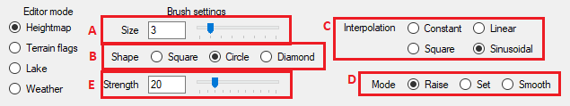
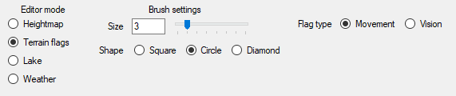
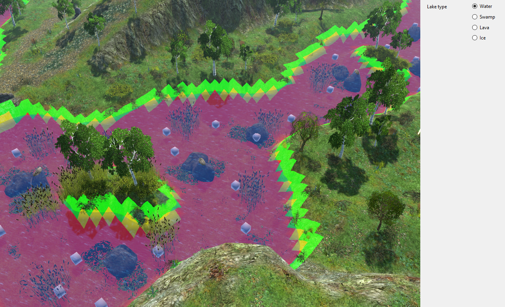
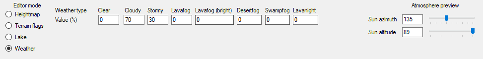
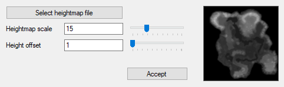
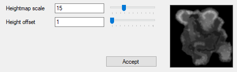

Every map in SpellForce starts with terrain. In terrain mode, you can modify 4 aspects of the map:
Heightmap is part of the terrain that defines terrain elevation. Together with terrain textures, it is the first thing players notice about the terrain.
Pressing and holding left or right mouse button will apply terrain modification, depending on brush settings.
In addition, if Shift is held while either of mouse buttons is pressed, the currently selected terrain modification will be applied to
Editing terrain can also affect surrounding lakes, shrinking/expanding, splitting, or removing them in the process. Be mindful of that while editing terrain.
Terrain flags control the way units move around the map, and which parts of the terrain will be obscured in fog of war.
Pressing and holding left or right mouse button will apply terrain flags, depending on brush settings.
Lakes denote areas covered by water. This does not include the ocean found beyond the map bounds.
While in flood mode, clicking on a terrain with left mouse button will attempt to create a lake at the water level equal to the height of the terrain at cursor position, while right mouse button will remove the lake hovered by cursor. Holding Shift will show you an approximation of the level of the lake that would be created.
While in select mode, clicking on a lake with left mouse button will select the lake for individual edition, while right mouse button will deselect currently selected lake. 
Notice the flags around and in the lake. Green flags around the lake denote shore, yellow flags in the lake denote shallow water, red flags denote deep water. Units in game are allowed to walk on shallow water, but not in deep water. The depth limit for shallow water is 50.
Every map in the game is assigned weather settings. There are 8 available weather presets, and you can set the weights which indicate the chance for each weather type to occur.
When you save the map, the weights are modified so the sum of all weights is always equal to 100.
Additionally, you can preview atmosphere by changing values in the Atmosphere preview.
You can import a heightmap from a file by selecting Tools -> Import heightmap from the menu strip.
Select heightmap - Choose heightmap file. It can be either a BMP or PNG file.
Heightmap scale - This value determines the factor by which pixel value is multiplied to obtain height.
Height offset - This value determines how much the pixel value is shifted down. Effectively, all heights will be lowered by Heightmap scale * Height offset.
You can export a heightmap from a file by selecting Tools -> Export heightmap from the menu strip.
Heightmap scale - This value determines the factor by which height is divided to obtain pixel value.
Height offset - This value determines how much the height value is shifted up. Effectively, all pixel values will be increased by Heightmap scale / Height offset. Height 0 is alawys encoded as pixel with value 0.
Effectively, heightmap exported with given settings can be imported using those settings. The only problem is precision limit of pixel values (pixel values 0-255 can't encode height values 0-65535). This can be mitigated by increasing Height offset on export/import and modifying Heightmap scale to compensate.